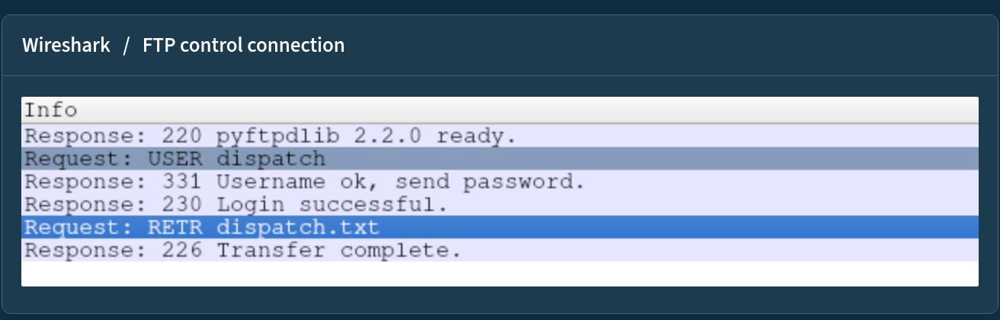

Web application 1:06
Follow a shop order
Burp Suite, ZAP and mitmproxy capture the same customer journey. See how a search alert is checked against the HTTP response.
VŠB–TUO · Topic 11
What can each tool establish about the same shop, and when does a finding need a second check? We chose three HTTP proxies to compare one customer journey and three infrastructure tools to trace the retirement of a file share. The selection reflects those tasks. We did not measure how often the tools are used.
Web application 1:06
Burp Suite, ZAP and mitmproxy capture the same customer journey. See how a search alert is checked against the HTTP response.

Infrastructure 1:47
Nmap, Metasploit and Wireshark follow a legacy FTP service from discovery to file transfer. The retest checks that FTP closed and the shop still responds.
Compare the tools’ evidence, then read the student’s choice and the search response that shaped it.